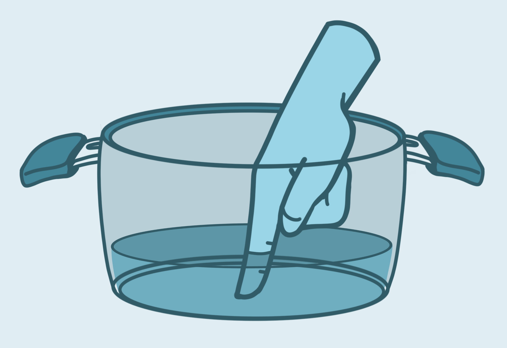
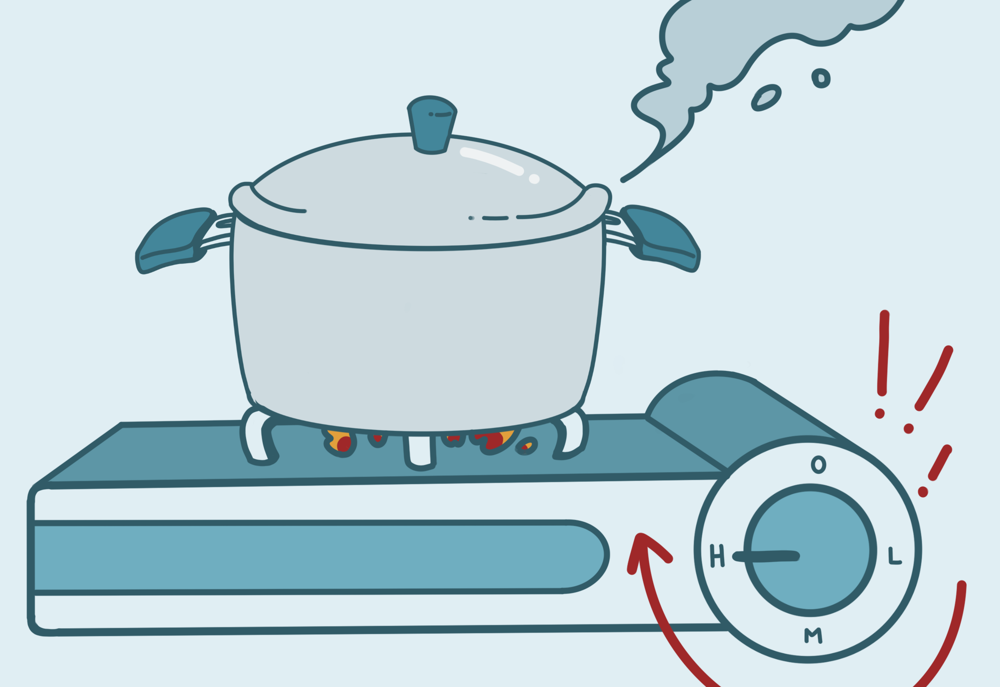
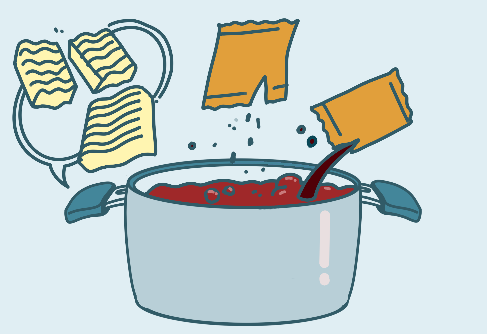
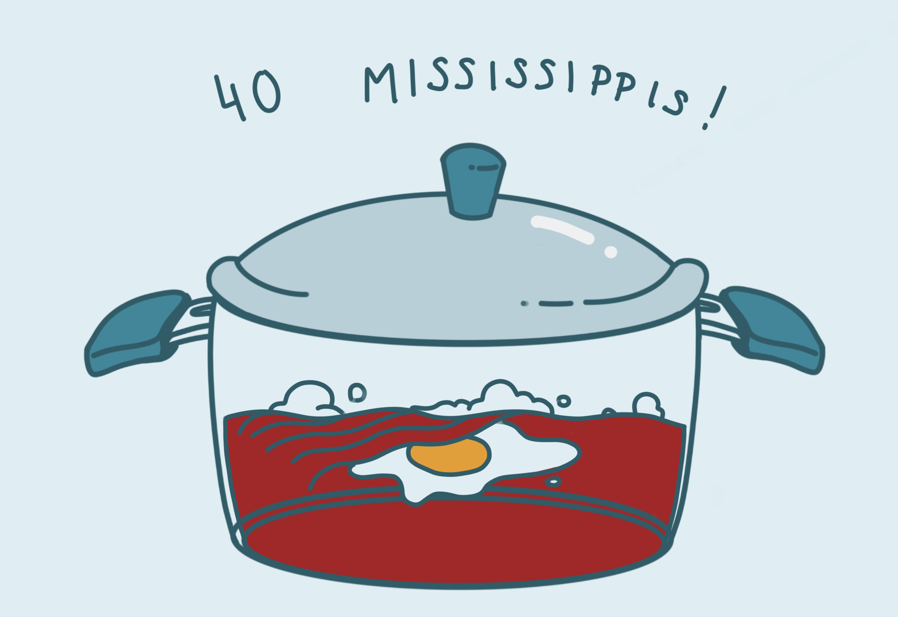

(highly recommended!) Green Onion
(highly recommended!) Egg
Rice Cakes
Cheese
Frozen Dumplings, Fishcakes
Cooked Meats
Recommended Optional Ingredients
**Recommended Stovetop Ramen**
Shin Ramen
Neoguri
Insructions:
Grab a small pot and fill it with water, in between your
first and middle knuckle on your pointer finger
Note: the package usually requires way too much water!

Put the pot on stove and crank the heat up to HIGH!
While boiling the water, you can prep other ingredients.
If you have green onion, chop it up
If you have frozen dumplings or fishcakes,
you can add it in now
Note: Some people like to crack their
noodle block in half for eash of eating!
seasoning packet, dried vegetables, and noodles.
If you want to add rice cakes, add them in now! 
Test the noodles every minute or so.
Once they hit a little bit before al dente,
crack in your egg and gently cover it with your noodles!
Then cover your pot with a lid and turn
the heat down to medium
Count for 40 seconds (including the Mississippi's!)
Then quickly add your green onions!
If you decide to add cheese,
throw it on top right before you add green onions!
If you wanted to add boiled eggs, add them now!
Cover your pot with a lid and take it off the heat
Enjoy!

Recommended: Eating straight from the pot!
Recommended: Make it a goal to finish your ramen within 15 min!
The noodles can get super soggy,
which can ruin the eating experience for a lot of people